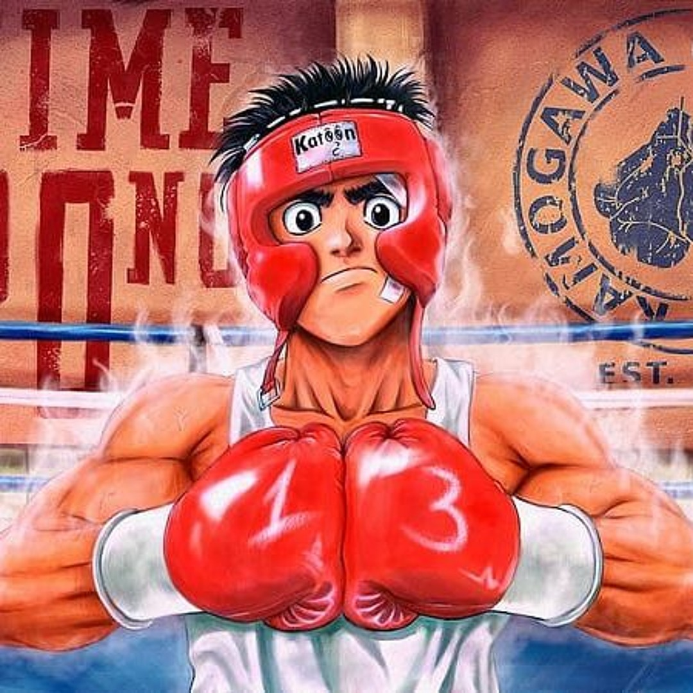

Video
Video

This is Ippo Makunouchi
Questions
What are positives and negatives of hosting videos on Youtube?
Negative: Ads could be a competitor
Positive: Easy to host and find videos
What is the most useful thing you can do with a transform?
The most useful thing is rotating an element on the webpage.
Whats the difference between a transform and a transition?
Transform changes an elements appearance or postition by rotating, scaling or moving it.
Transition makes changes happen over time, like changing the button's background color or a delay in the hover.